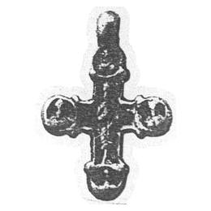

Catalog › CE-0117 · KHA1900-245
Cruce de aramă cu Răstignirea și patru sfinți în medalioane, ierarh pe revers
XIII в. (1201–1300) · Vypovzov (Выповзовъ), gubernia Cernigov, Ucraina · Colecția B. I. și V. N. Khanenko, Kiev, inv. nr. 245 (numerotarea colecției Khanenko)
pectoral cross, aramă; XIII в. (1201–1300); found at Vypovzov (Выповзовъ), gubernia Cernigov, Ucraina; kept at Colecția B. I. și V. N. Khanenko, Kiev.


Identificare
- Categorie
- Cruce pectorală simplă
- Material
- Aramă
- Tehnică
- Turnare în relief
Iconografie
- Descriere avers
- Cruce de aramă, cu capete rotunjite și ureche, cu reprezentare în relief: pe o față Răstignirea și, la capete, în medalioane, chipurile a patru sfinți.
- Descriere revers
- Pe revers, un ierarh în picioare; la capete, în medalioane, chipurile a patru sfinți.
Datare și atribuire
- Datare
- XIII в. (1201–1300)
- Centru
- Necunoscut
Descoperire
- Localitate
- Vypovzov (Выповзовъ)
- Regiune
- gubernia Cernigov
- Țară
- Ucraina
- Context
- Necunoscut
- Coordonate
- 50.9361° N, 30.7905° E
- Precizia locului
- Doar localitatea
Păstrare și referințe
- Colecție
- Colecția B. I. și V. N. Khanenko, Kiev
- Nr. inventar
- nr. 245 (numerotarea colecției Khanenko)
- Bibliografie
- B. I. și V. N. Khanenko, Древности русскія. Кресты и образки, вып. II (Собраніе Б. И. и В. Н. Ханенко), Kiev, 1900 [Khanenko 1900], cat. nr. 245, Tabl. XXI, reprodusă la Табл. XXI, fig. 245 (planșa de la p. 20 a PDF-ului).
- Figura
- Табл. XXI, fig. 245
- Planșe
- Khanenko 1900, Табл. XXI (planșă fără paginație tipărită; p. 20 în PDF)
- Observații
- Datare după Khanenko: XIII в. Coordonate: ale localității (aproximative), nu date în sursă.
Citare: Corpus Encolpiorum, CE-0117, Cruce de aramă cu Răstignirea și patru sfinți în medalioane, ierarh pe revers, https://vitaliejosanu1979-ux.github.io/primul-meu-proiect/piese/KHA1900-245/ (accesat 2026-10-17).